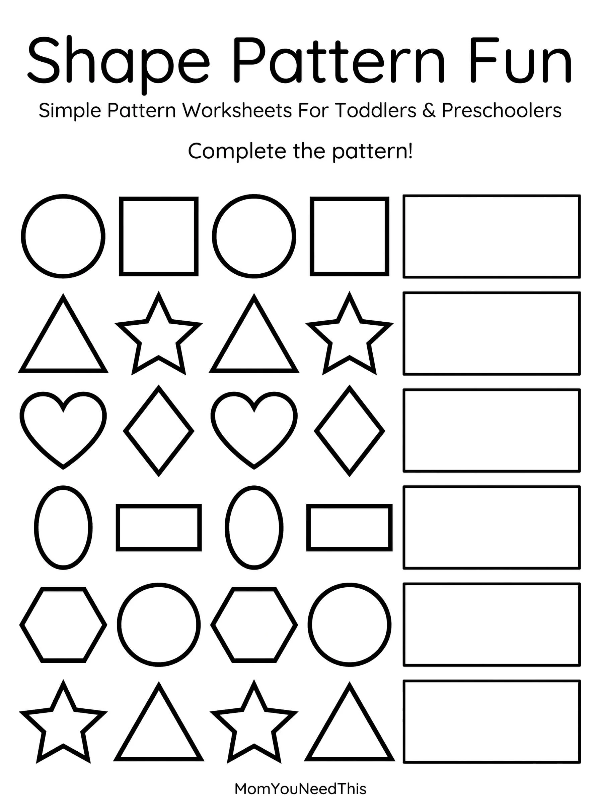

Shape Pattern AB Free Printable AB Shape Pattern Activity For Kids
This Shape Pattern AB worksheet runs its patterns in shapes. Six rows each show an AB unit twice — circle, square, circle, square — and end with one wide empty box. Your child's job is to continue the pattern by drawing the next shape in the box. The unit is always two shapes, the answer is always the first shape come round again, and the whole skill is seeing the pair as a pair.
This is the continuation step of pattern work: the pattern is complete and running, and the child extends it. (Completing a pattern with a gap in the middle is the harder step that comes after — the site's Complete the Pattern sheet covers that.) Because the answers are drawn, this page also quietly rehearses drawing circles, squares, triangles, stars, hearts, diamonds, ovals, rectangles and hexagons.
Quick Answer
Circle, square, circle, square — what comes next? This shape pattern AB printable gives toddlers and preschoolers six rows of running AB patterns, each ending in one wide empty box to draw the next shape in. Drawing the answers rehearses circles, squares, triangles, stars, hearts and more. Free printable sheet, no signup.
At a Glance
- Ages: Toddlers and preschoolers
- Activity: Continuing AB shape patterns — drawing the next shape in six rows
- Skills: Pattern continuation and shape recognition
- Format: Printable worksheet (PDF)
- Cost: Free, no signup
🔷 Find The Pattern
Use the printable to help your child recognize repeating AB shape patterns, identify what comes next, and practice sequencing through a simple shape activity.
Free Shape Pattern AB Printable

How To Use This Printable
Download and print the pattern page. Work one row at a time: say the shapes out loud together, pointing at each one — “circle, square, circle, square…” — and clap or tap the table on the beat if it helps the pair feel like a rhythm.
When the chant reaches the empty box, stop and ask what shape comes next. The answer is the shape that starts the unit again. Let your child draw it in the box — a wobbly circle counts fully; the pattern thinking is the exercise, and the drawing is how the answer gets recorded.
Row by row, the pairs change: triangle–star, heart–diamond, oval–rectangle, hexagon–circle, star–triangle. If a row goes wrong, chant it again from the start rather than naming the right shape — hearing where the rhythm breaks teaches more than being told.
Why Learn Shape Patterns?
Shape patterns ask more than color patterns do. A color can be pointed at; a shape must be recognized — its sides, corners and curves identified — before it can take its turn in the sequence. Running an AB pattern in shapes therefore practices shape knowledge and pattern logic in the same motion, each skill checking the other.
The deeper prize is the unit idea. A child who can look at circle–square–circle–square and see “the pair repeats” has grasped that patterns are built from a chunk that recurs — the exact idea underneath counting by twos, calendar weeks, and every repeating structure math will ever show them. Drawing the next shape makes the prediction physical: the hand commits to what the mind foresaw.
🎁 Keep Exploring Free Learning Activities
Discover more printable activities, toddler resources, and learning ideas created for busy parents.
🎁 View All Free Resources📋 The Six Rows — What Goes In Each Box (Parent’s Key)
Circle – square: the box takes a circle.
Triangle – star: the box takes a triangle.
Heart – diamond: the box takes a heart.
Oval – rectangle: the box takes an oval.
Hexagon – circle: the box takes a hexagon.
Star – triangle: the box takes a star.
Every answer is the row's first shape returning — because an AB pattern that has run twice starts its unit a third time. If your child draws the SECOND shape instead (square after circle–square–circle–square), they are predicting one step too few: they answered “what alternates?” instead of “what comes next in the run?” Chant the row with a finger tapping each shape and the box usually corrects itself.
❓ Shape Pattern AB FAQ
Is this shape pattern ab printable really free?
Yes — this Shape Pattern AB printable is 100% free to download and print at home. No signup and no payment needed, just tap the download button. It is an all-black-and-white sheet (six rows of shape patterns), so reprints for a second attempt cost almost nothing.
What ages is this printable best for?
Say the shapes, then draw the next one. Point along a row chanting the pair — “circle, square, circle, square” — and let your child draw the shape that continues the pattern in the empty box at the row's end. The answer is always the unit's first shape starting again. If drawing a shape is still hard (hexagons are ambitious), a simplified version with the right idea counts — the pattern decision is the skill.
How do we work on patterns?
Continuing a pattern is the middle step of pattern learning: after recognizing that a pattern repeats, a child learns to extend it — predicting what comes next and committing to the prediction. On this sheet the prediction is a drawn shape, so the page also builds shape recognition and early drawing control. The step after this is completing patterns with gaps in the middle, which asks the child to check the pattern in both directions.
🔗 More Free Printables You’ll Love
- Free Alphabet Coloring Pages Free printable alphabet coloring pages for little learners.
- Free Shape Pattern Activities Free printable shape pattern activities for little learners.
- Free Pattern Activity Pages Free printable pattern activity pages for little learners.
- Free Shape Coloring Pages Free printable shape coloring pages for little learners.